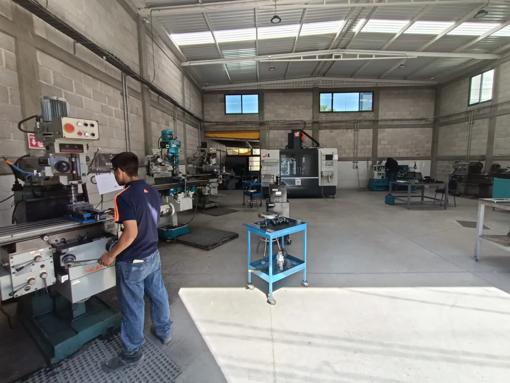
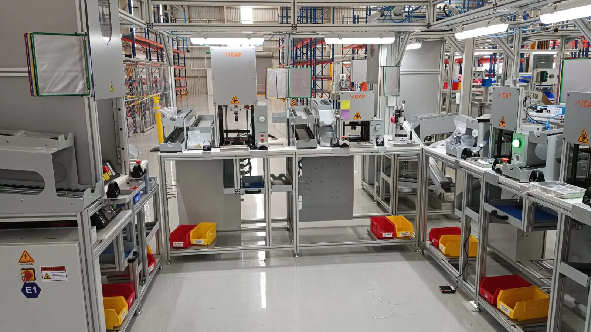
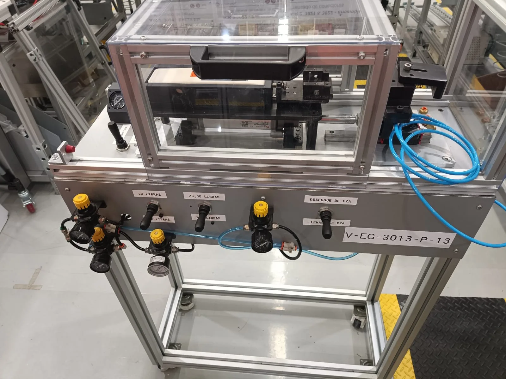

INGENIERÍA INDUSTRIAL · QUERÉTARO
Ingeniería que
convierte ideas
en movimiento.
Soluciones a medida para automatización de procesos, diseño y manufactura industrial.
Integramos ingeniería, manufactura y control para responder a los retos reales de la industria.
NUESTRAS ESPECIALIDADES
Soluciones para cada
etapa del proceso.
Cuatro áreas de trabajo conectadas por un mismo objetivo: desarrollar soluciones prácticas y precisas para la industria.
Diseño Mecánico
Diseño de piezas, componentes y sistemas de naturaleza mecánica.
02Manufactura
Fabricación y desarrollo de soluciones para procesos industriales.
03Eléctrico / Neumático
Integración eléctrica y neumática para equipos y estaciones de trabajo.
04Control
Soluciones de control para la automatización de procesos.
Las fichas completas de servicios continúan disponibles en el sitio actual de ICAP.

SOBRE ICAP INGENIERÍA
Pensamos en
la solución.
Hacemos que suceda.
ICAP Ingeniería nació en Querétaro en 2016 para ofrecer soluciones prácticas, concretas y eficientes a la industria. Su trabajo reúne automatización de procesos e innovación tecnológica.
Conoce más sobre ICAPTRABAJO EN IMÁGENES
Ingeniería
en acción.
Una selección de imágenes publicadas por ICAP que muestra equipos, instalaciones y trabajo industrial.




HABLEMOS DE TU PROYECTO
El siguiente paso
empieza aquí.
Cuéntanos qué necesita tu operación. Estamos en El Marqués, Querétaro.